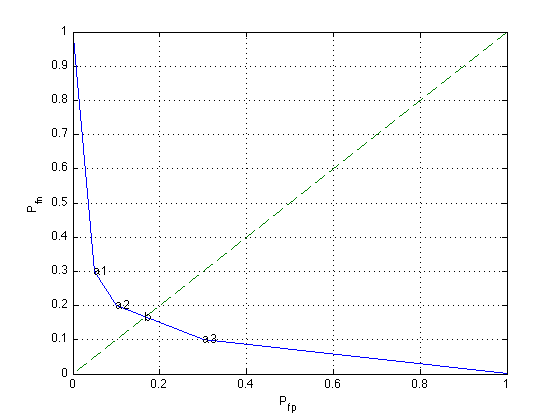

% Figure 7.4 % Boyd & Vandenberghe "Convex Optimization" % Original version by Lieven Vandenberghe % Updated for CVX by Michael Grant, 2005-12-19 % Generate the data P = [0.70 0.10 0.20 0.10 0.05 0.70 0.05 0.10]; [n,m] = size(P); % Construct the tradeoff curve by finding the % the Pareto optimal deterministic detectors, % which are the curve's vertices nopts = 1000; weights = logspace(-5,5,nopts); obj = [0;1]; inds = ones(n,1); % minimize -t1'*q1 - w*t2'*q2 % s.t. t1+t2 = 1, t1,t2 \geq 0 next = 2; for i = 1 : nopts, PW = P * diag( [ 1 ; weights(i) ] ); [ maxvals, maxinds ] = max( PW' ); % max elt in each row if (~isequal(maxinds', inds(:,next-1))) inds(:,next) = maxinds'; T = zeros(m,n); for j=1:n T(maxinds(1,j),j) = 1; end; obj(:,next) = 1-diag(T*P); next = next+1; end; end; plot(obj(1,:), obj(2,:),[0 1], [0 1],'--'); grid on for i=2:size(obj,2)-1 text(obj(1,i),obj(2,i),['a', num2str(i-1)]); end; % Minimax detector: not deterministic cvx_begin variables T( m, n ) D( m, m ) minimize max( D(1,2), D(2,1) ) subject to D == T * P; sum( T, 1 ) == 1; T >= 0; cvx_end objmp = 1 - diag( D ); text( objmp(1), objmp(2), 'b' ); xlabel('P_{fp}'); ylabel('P_{fn}'); %print -deps roc.eps
Calling sedumi: 10 variables, 5 equality constraints ------------------------------------------------------------ SeDuMi 1.21 by AdvOL, 2005-2008 and Jos F. Sturm, 1998-2003. Alg = 2: xz-corrector, Adaptive Step-Differentiation, theta = 0.250, beta = 0.500 eqs m = 5, order n = 11, dim = 11, blocks = 1 nnz(A) = 18 + 0, nnz(ADA) = 13, nnz(L) = 9 it : b*y gap delta rate t/tP* t/tD* feas cg cg prec 0 : 3.84E+00 0.000 1 : 4.94E-01 1.11E+00 0.000 0.2891 0.9000 0.9000 3.24 1 1 7.1E-01 2 : 2.26E-01 2.18E-01 0.000 0.1960 0.9000 0.9000 1.25 1 1 1.7E-01 3 : 1.82E-01 5.12E-02 0.000 0.2353 0.9000 0.9000 1.05 1 1 4.6E-02 4 : 1.68E-01 4.07E-03 0.000 0.0794 0.9900 0.9900 1.01 1 1 4.0E-03 5 : 1.67E-01 1.65E-06 0.000 0.0004 0.9999 0.9999 1.00 1 1 iter seconds digits c*x b*y 5 0.0 Inf 1.6666666667e-01 1.6666666667e-01 |Ax-b| = 1.6e-16, [Ay-c]_+ = 0.0E+00, |x|= 1.9e+00, |y|= 3.5e-01 Detailed timing (sec) Pre IPM Post 0.000E+00 2.000E-02 0.000E+00 Max-norms: ||b||=1, ||c|| = 1, Cholesky |add|=0, |skip| = 0, ||L.L|| = 1. ------------------------------------------------------------ Status: Solved Optimal value (cvx_optval): +0.166667
